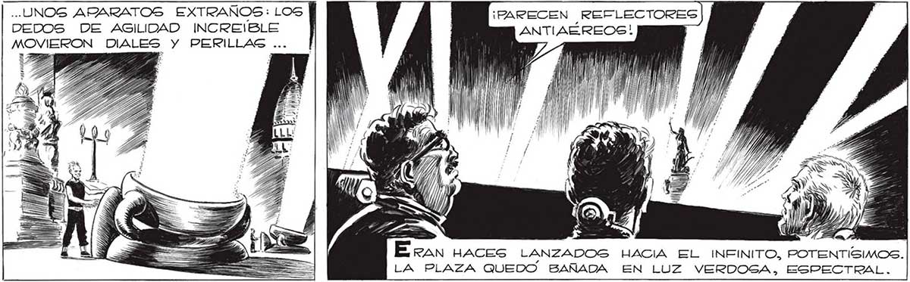

270 .-. UNOG ARARATOS EXTRAÑOS: LOS ¡PARECEN REFLECTORES MOVIERON DIALES y PERILLASG ... ÁAciss, LOS DEDOS DE LOS 'MANOS” BAILLARON EN LOS APARATOS... N ' (1d pr Los HACES PARECIAN TEMBLAR, ALGUNO A VECES SE INCLINASBA, COMO BUSCANDO AL GO... DE PRONTO... ¡ERA UN BOMBARDERO FRANCES! ¡ESTRATOSFEÉRICO., DE LOS ÚLTIMOS MO4, 5) .l dy sli ll h le a á
